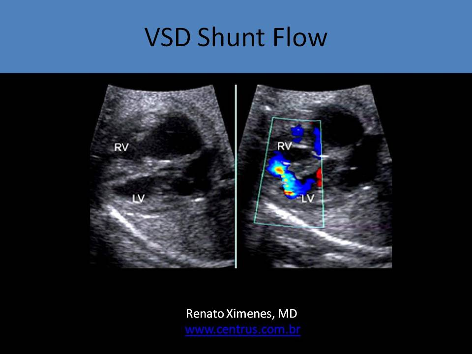
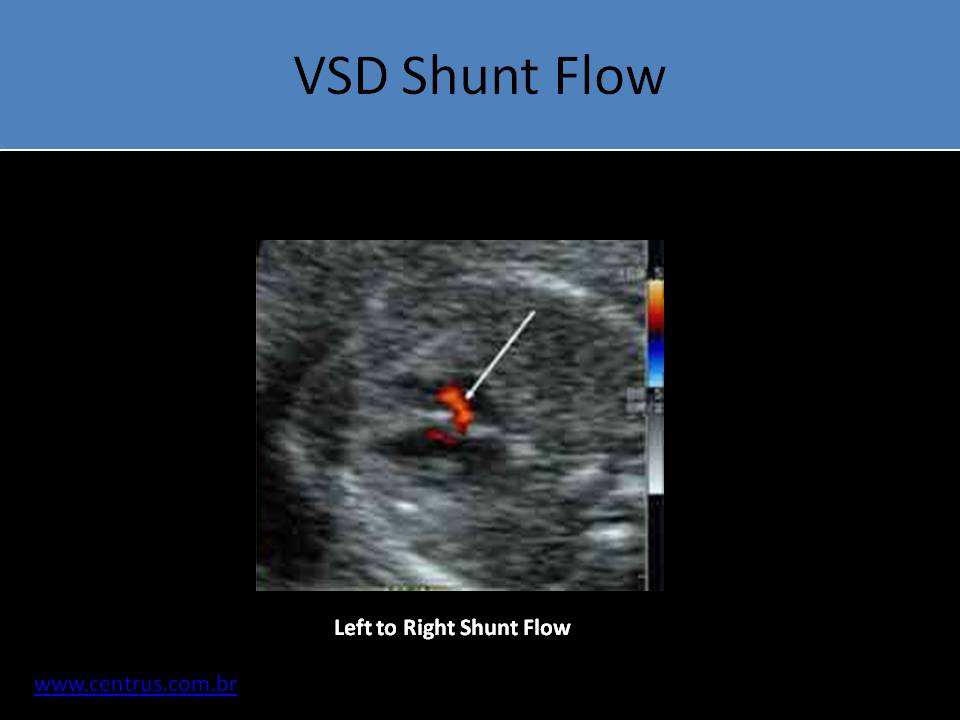

.jpg)
Ventricular Septal Defect
- Communication between right and left ventricle
- Can be located anywhere and varies in size
- Associated with intracardiac or extracardiac abnormalities
- Most common congenital heart defect identified in newborns
- Most common teratogen-related defect
- Commonly associated with maternal use of marijuana and/or alcohol (fetal alcohol syndrome)
- Most commonly occurs as an isolated defect
- Most spontaneously close before birth (70%)
- Of those VSD that are present at birth, most close spontaneously within 1 year of life
- This is why VSD is the most commonly occurring defect but in adults bicuspid aortic valve is the most commonly identified defect
- Presence of VSD increases the risk of associated chromosomal anomaly; karyotyping should be performed
- Associated Anomalies:
- Coarctation of the aorta
- Interrupted aortic arch
- Conotruncal anomalies ( TOF, Truncus arteriosus, Double outlet right ventricle)
- Most common cardiac anomaly for Trisomy 13, 18 and 21
- 56% malalignment defects occur with Trisomy 18
- 50% inlet VSD seen with Trisomy 21
- Perimembranous
- Most common, 75-80%
- Most common VSD diagnosed in neonate
- Any kind of defect adjacent to the aortic valve beneath the right and noncoronary cusps
- Membranous: hole at the membrane portion
- Perimembranous: hole surrounding the membranous portion
- Associated with the tricuspid valve septal leaflet
- May form an aneurysm of the membranous septum
- Aortic insufficiency occurs due to prolapse of cusps
- Commonly associated with conotruncal defects
- Most commonly associated with coarctation
- Also associated with aortic stenosis, interrupted arch and TOF
- Muscular
- 5-20% of VSD
- Most common VSD diagnosed in a fetus
- AKA trabecular, or mid-muscular
- Mid-muscular location is most common
- Located completely with the muscular septum
- Located anywhere in the muscular septum which extends from the attachment of the tricuspid valve leaflets toward the apex
- Can be multiple causing "Swiss cheese" appearance
- Difficult to repair
- Atrioventricular canal-type
- 5-8%
- AKA inlet muscular defect
- Located between the mitral and tricuspid valves
- Seen posteriorly and inferiorly beneath the tricuspid septal leaflet
- Can be associated with endocardial cushion defect
- Subarterial
- 5-7%
- AKA outlet, subpulmonic, infundibular, conal, supracristal, or doubly committed
- Adjacent to the pulmonary or aortic valves
- Located in the infundibular portion of the right ventricular outflow tract
- Associated with aortic insufficiency secondary to prolapsed of the aortic cusps ( right or noncoronary) into the defect because of loss of annular support for the aortic valve
- Higher incidence in the Asian population
- Should be repaired regardless of the size of the defect
Malalignment Defect:
- A membranous defect secondary to the malalignment of the infundibular septum and the trabecular septum
- Anterior septal shift can cause right ventricular outflow obstruction
- Anterior malalignment VSDs: tetralogy of Fallot, double outlet RV
- Posterior septal shift can cause left ventricular outflow obstruction
- Posterior malalignment VSDs: subaortic stenosis with coarctation or interrupted aortic arch
- Both ventricles empty into an overriding aorta
- Muscular defects can also be malaligned
- Subcostal four chamber view: best view for the muscular VSDs due to the ultrasound beam being perpendicular to the septum and parallel to the shunt flow across the defect
- In the normal heart, drop-out artifact can cause the false appearance of a VSD due to a thin membrane in the membranous septum
- Apical 4 chamber view should not be used to evaluate the interventricular septum because the ultrasound beam is parallel to the septum and perpendicular to the shunt flow across the defect
- Color Doppler bleeding can also cause a false positive VSD diagnosis
- A real defect demonstrates the "T" sign - an area of dropout in the septum is bordered by a high amplitude, hyperechoic specular reflector
- Small muscular VSD can be difficult to diagnose and easily closes after birth
- Five chamber view or longitudinal aorta view: best view for the diagnosis of a perimembranous VSD
- A short axis sweep from the great arteries to the apex of the heart should also be performed to assess the septum
- Bidirectional shunt without obstruction - left to right in systole and right to left in diastole
- VSD <3mm cannot be effectively identified on fetal echo
 
AV Canal Type Defect
Double Outlet Right Ventricle (Malalignment)